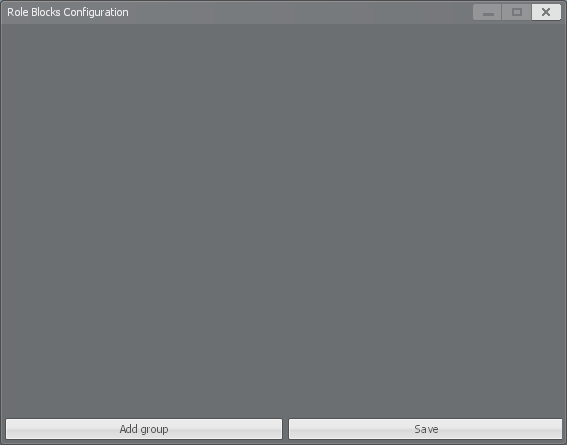
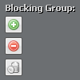
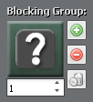
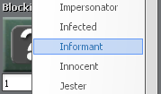
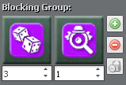

Role blocks let you prevent specific roles from spawning together in the same round. Previously this functionality was only available to a few select pairs of roles using ConVars such as ttt_single_paramedic_hypnotist, but these have been removed as role blocks can achieve everything these ConVars could, and more.
Role blocks are configured using the UI, accessible by admins using the ttt_roleblocks command. Role blocks are saved in the data/rolepacks.json file so that they can then be backed up or copied from server-to-server just by transferring that file.

By default, your role blocks window should be mostly empty. (If you were previously using ConVars such as ttt_single_paramedic_hypnotist, you will see those options have already copied over.)
Here you will be able to create "blocking groups" which determine which roles cannot spawn together. Roles that are in the same blocking group will be unable to spawn together at the start of a round, but will still have the ability to appear later in the round through other means. (e.g. Marshal deputizing, Drunk sobering, etc.) Each role within a blocking group can have a weight assigned to it, making it more likely to block other roles in the same blocking group from spawning.
To add a new role blocking group, start by clicking the "Add group" button. Once a group has been added, you will be presented with three buttons:

When a new role entry has been added to a blocking group it defaults to the "NONE" or "?" role. When this placeholder role is alone in a blocking group, it behaves the same as if the blocking group was empty and will do nothing.

To change the role that the slot belongs to, click the role icon and select the new role from the dropdown.

To change the weight of a role (how often this role should be selected relative to the other roles in this blocking group), change the number in the box below the role icon by typing or using the adjustment arrows.
